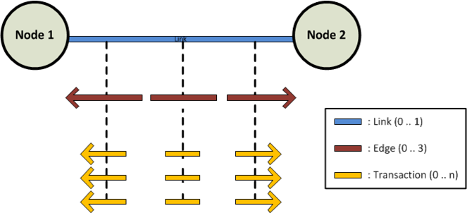

The CONSTELLATION Graph Model
The diagram below shows the components of a graph.
-
A transaction represents an interaction between two nodes; it can be directed from node 1 to node 2, directed from node 2 to node 1,
or undirected. There can be multiple transactions between two nodes.
-
An edge is the collection of transactions in a single direction between two nodes. Because there are only three directions
(as described above), there can only be up to three edges between two nodes.
-
A link is the collection of edges (and therefore transactions) between two nodes. There can be no more than one link between two nodes.
A link has no direction.

For more information of on the nodes and transactions, refer to Views -> Schema View after opening a graph.